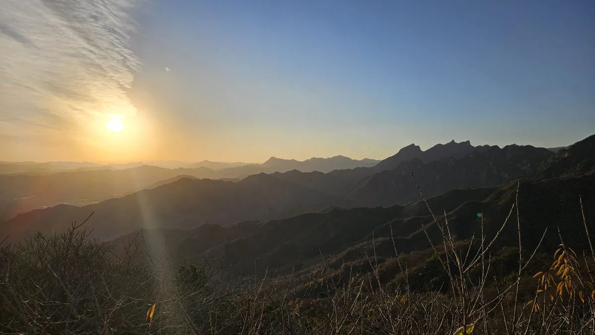
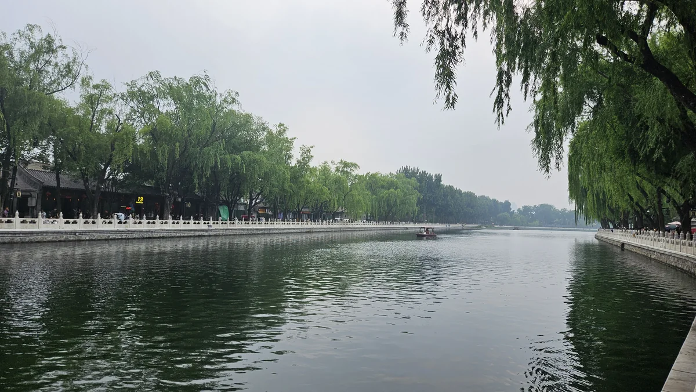

2025.11 · 慕田峪
⛰️ 世界遺產
閱讀慕田峪遊記 →
慕田峪長城：錢都花了，VIP 卻不用排隊
和難得聚在北京的跨國同事包車登長城。VIP 快速通關沒派上用場，但專車直達與一個多小時的長城暮色，仍是極為舒服的長城初體驗。
第一次因工作來北京，順道包車登長城、住進水鎮客棧；第二次陪 Belle 來場勘學校，也各自走進景山與老北京胡同。兩趟旅行沒有照套裝行程走，卻拼出了最真實的北京印象。

2025.11 · 慕田峪和難得聚在北京的跨國同事包車登長城。VIP 快速通關沒派上用場，但專車直達與一個多小時的長城暮色，仍是極為舒服的長城初體驗。
明知是人造度假區，卻能營運十多年維持乾淨精緻、四季玩法徹底翻盤。秋天出差獨遊搭搖櫓船、初夏帶女兒重返登司馬台夜長城看無人機秀。
不用提早幾週搶故宮門票，出發前手機買好兩塊錢門票。只要爬十幾層樓高的萬春亭，整座紫禁城金黃琉璃瓦頂與端正中軸線全景盡收眼底。

2026.06 · 胡同散步星期一想去的館都沒開，乾脆從南鑼鼓巷轉進雨兒胡同。在玉河公園看孩子放學後跑跳，再沿什剎海一路走到鐘鼓樓。